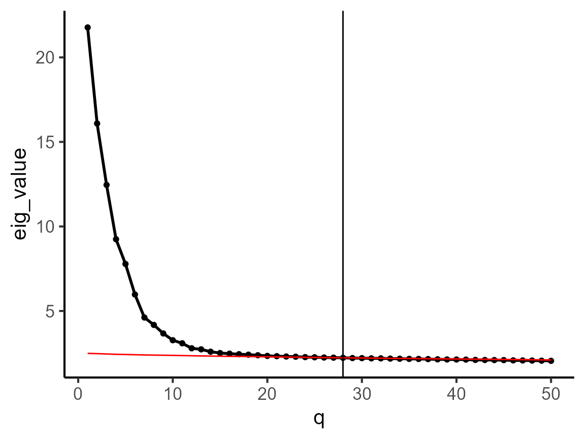
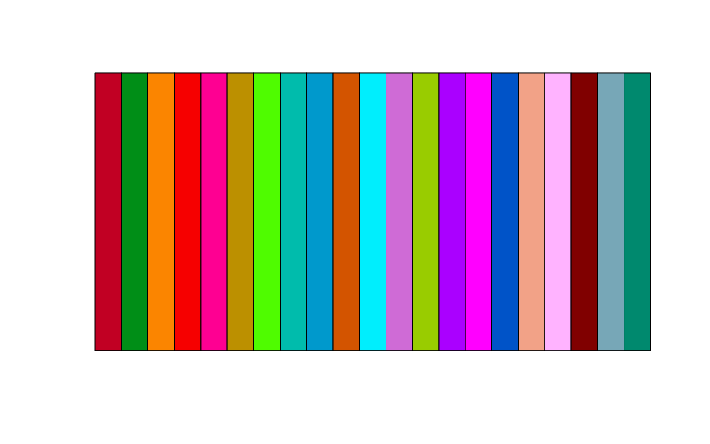
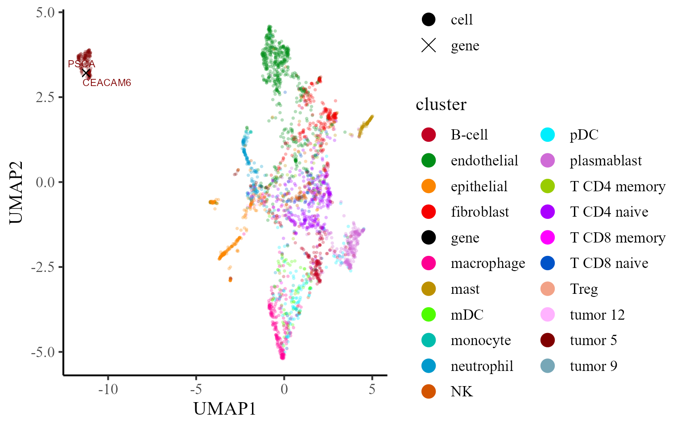
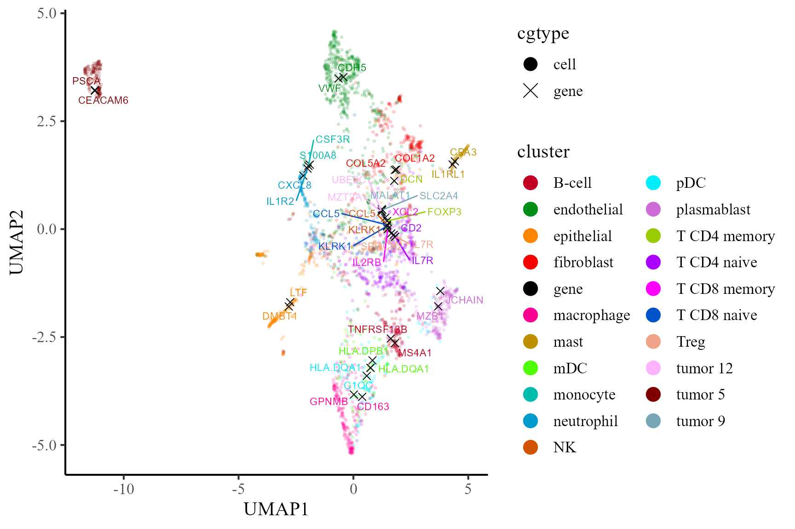
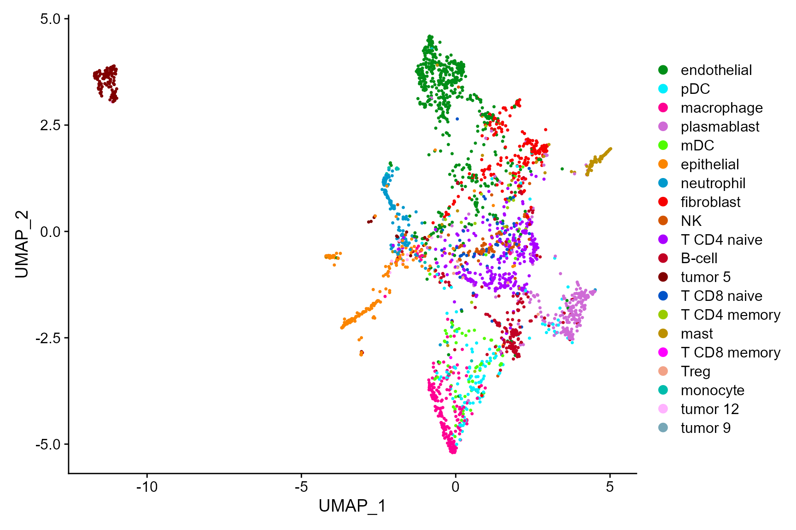
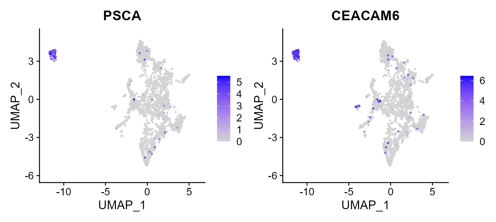

This vignette introduces the CoFAST workflow for the analysis of NSCLC CosMx spatial transcriptomics dataset. In this vignette, the workflow of CoFAST consists of three steps
We demonstrate the use of CoFAST to NSCLC data, which can be downloaded to the current working path by the following command:
set.seed(2024) # set a random seed for reproducibility.
library(ProFAST) # load the package of FAST method
#> Loading required package: gtools
#>
#>
data(CosMx_subset)
CosMx_subset
#> An object of class Seurat
#> 960 features across 2814 samples within 1 assay
#> Active assay: RNA (960 features, 960 variable features)The package can be loaded with the command:
First, we normalize the data.
CosMx_subset <- NormalizeData(CosMx_subset)Then, we select the variable genes.
CosMx_subset <- FindVariableFeatures(CosMx_subset)We introduce how to use FAST to perform coembedding for this CosMx data. First, we determine the dimension of coembeddings. Then, we select the variable genes.
dat_cor <- diagnostic.cor.eigs(CosMx_subset)
Subsequently, we calculate coembeddings by utilizing FAST, and observe that the reductions field acquires an additional component named fast.
pos <- as.matrix(CosMx_subset@meta.data[,c("x", "y")]) # Extract the spatial coordinates
Adj_sp <- AddAdj(pos) ## calculate the adjacency matrix
#> The spatial cooridnates are 2 dimensions
#> Find the adjacency matrix by bisection method...
#> Current radius is 62.34
#> Median of neighborhoods is 0
#> Current radius is 93.01
#> Median of neighborhoods is 2
#> Current radius is 93.01
#> Median of neighborhoods is 5
CosMx_subset <- NCFM_fast(CosMx_subset, Adj_sp = Adj_sp, q = q_est)
#> Finish variable intialization
#> Satrt ICM and E-step!
#> Finish ICM and E-step!
#> iter = 2, loglik= -1426036.505262, dloglik=0.999336
#> Satrt ICM and E-step!
#> Finish ICM and E-step!
#> iter = 3, loglik= -1412722.725309, dloglik=0.009336
#> Satrt ICM and E-step!
#> Finish ICM and E-step!
#> iter = 4, loglik= -1409935.707519, dloglik=0.001973
#> Satrt ICM and E-step!
#> Finish ICM and E-step!
#> iter = 5, loglik= -1408112.785855, dloglik=0.001293
#> Satrt ICM and E-step!
#> Finish ICM and E-step!
#> iter = 6, loglik= -1407078.327983, dloglik=0.000735
#> Satrt ICM and E-step!
#> Finish ICM and E-step!
#> iter = 7, loglik= -1406307.819693, dloglik=0.000548
#> Satrt ICM and E-step!
#> Finish ICM and E-step!
#> iter = 8, loglik= -1405752.637775, dloglik=0.000395
#> Satrt ICM and E-step!
#> Finish ICM and E-step!
#> iter = 9, loglik= -1405322.992407, dloglik=0.000306
#> Satrt ICM and E-step!
#> Finish ICM and E-step!
#> iter = 10, loglik= -1404988.226945, dloglik=0.000238
#> Satrt ICM and E-step!
#> Finish ICM and E-step!
#> iter = 11, loglik= -1404720.087996, dloglik=0.000191
#> Satrt ICM and E-step!
#> Finish ICM and E-step!
#> iter = 12, loglik= -1404502.802752, dloglik=0.000155
#> Satrt ICM and E-step!
#> Finish ICM and E-step!
#> iter = 13, loglik= -1404323.839289, dloglik=0.000127
#> Satrt ICM and E-step!
#> Finish ICM and E-step!
#> iter = 14, loglik= -1404174.552903, dloglik=0.000106
#> Satrt ICM and E-step!
#> Finish ICM and E-step!
#> iter = 15, loglik= -1404048.247071, dloglik=0.000090
#> Satrt ICM and E-step!
#> Finish ICM and E-step!
#> iter = 16, loglik= -1403940.001057, dloglik=0.000077
#> Satrt ICM and E-step!
#> Finish ICM and E-step!
#> iter = 17, loglik= -1403846.063585, dloglik=0.000067
#> Satrt ICM and E-step!
#> Finish ICM and E-step!
#> iter = 18, loglik= -1403763.627462, dloglik=0.000059
#> Satrt ICM and E-step!
#> Finish ICM and E-step!
#> iter = 19, loglik= -1403690.551094, dloglik=0.000052
#> Satrt ICM and E-step!
#> Finish ICM and E-step!
#> iter = 20, loglik= -1403625.203404, dloglik=0.000047
#> Satrt ICM and E-step!
#> Finish ICM and E-step!
#> iter = 21, loglik= -1403566.323442, dloglik=0.000042
#> Satrt ICM and E-step!
#> Finish ICM and E-step!
#> iter = 22, loglik= -1403512.931337, dloglik=0.000038
#> Satrt ICM and E-step!
#> Finish ICM and E-step!
#> iter = 23, loglik= -1403464.255770, dloglik=0.000035
#> Satrt ICM and E-step!
#> Finish ICM and E-step!
#> iter = 24, loglik= -1403419.684579, dloglik=0.000032
#> Satrt ICM and E-step!
#> Finish ICM and E-step!
#> iter = 25, loglik= -1403378.725655, dloglik=0.000029
CosMx_subset
#> An object of class Seurat
#> 960 features across 2814 samples within 1 assay
#> Active assay: RNA (960 features, 960 variable features)
#> 1 dimensional reduction calculated: fastIn the following, we show how to find the signature genes based on comebeddings. First, we calculate the distance matrix.
CosMx_subset <- pdistance(CosMx_subset, reduction = "fast")
#> Calculate co-embedding distance...Next, we find the signature genes for each cell type
print(table(CosMx_subset$cell_type))
#>
#> B-cell endothelial epithelial fibroblast macrophage mast
#> 193 587 226 224 220 97
#> mDC monocyte neutrophil NK pDC plasmablast
#> 68 16 146 81 131 249
#> T CD4 memory T CD4 naive T CD8 memory T CD8 naive Treg tumor 12
#> 17 301 3 65 13 16
#> tumor 5 tumor 9
#> 160 1
Idents(CosMx_subset) <- CosMx_subset$cell_type
df_sig_list <- find.signature.genes(CosMx_subset)
str(df_sig_list)
#> List of 20
#> $ B-cell :'data.frame': 317 obs. of 4 variables:
#> ..$ distance : num [1:317] 15.1 15.6 16 16 16.1 ...
#> ..$ expr.prop: num [1:317] 0.539 0.311 0.347 0.601 0.399 ...
#> ..$ label : chr [1:317] "B-cell" "B-cell" "B-cell" "B-cell" ...
#> ..$ gene : chr [1:317] "MS4A1" "TNFRSF13B" "CD19" "IGHM" ...
#> $ endothelial :'data.frame': 329 obs. of 4 variables:
#> ..$ distance : num [1:329] 16.3 16.4 16.5 16.5 16.6 ...
#> ..$ expr.prop: num [1:329] 0.661 0.44 0.283 0.307 0.641 ...
#> ..$ label : chr [1:329] "endothelial" "endothelial" "endothelial" "endothelial" ...
#> ..$ gene : chr [1:329] "VWF" "CDH5" "ADGRL2" "CLEC14A" ...
#> $ epithelial :'data.frame': 306 obs. of 4 variables:
#> ..$ distance : num [1:306] 18.5 18.5 18.6 19 19.1 ...
#> ..$ expr.prop: num [1:306] 0.708 0.531 0.478 0.403 0.292 ...
#> ..$ label : chr [1:306] "epithelial" "epithelial" "epithelial" "epithelial" ...
#> ..$ gene : chr [1:306] "LTF" "DMBT1" "LAMP3" "ITGB6" ...
#> $ fibroblast :'data.frame': 327 obs. of 4 variables:
#> ..$ distance : num [1:327] 17.7 17.8 17.8 17.8 17.9 ...
#> ..$ expr.prop: num [1:327] 0.799 0.33 0.393 0.353 0.679 ...
#> ..$ label : chr [1:327] "fibroblast" "fibroblast" "fibroblast" "fibroblast" ...
#> ..$ gene : chr [1:327] "COL1A2" "COL5A2" "COL14A1" "CDH11" ...
#> $ macrophage :'data.frame': 306 obs. of 4 variables:
#> ..$ distance : num [1:306] 16.6 16.9 17 17.2 17.4 ...
#> ..$ expr.prop: num [1:306] 0.709 0.659 0.832 0.523 0.305 ...
#> ..$ label : chr [1:306] "macrophage" "macrophage" "macrophage" "macrophage" ...
#> ..$ gene : chr [1:306] "GPNMB" "CD163" "C1QB" "CCL18" ...
#> $ mast :'data.frame': 321 obs. of 4 variables:
#> ..$ distance : num [1:321] 16.7 16.9 17.3 17.7 18.6 ...
#> ..$ expr.prop: num [1:321] 0.887 0.577 0.99 0.979 0.701 ...
#> ..$ label : chr [1:321] "mast" "mast" "mast" "mast" ...
#> ..$ gene : chr [1:321] "CPA3" "IL1RL1" "TPSB2" "TPSAB1" ...
#> $ mDC :'data.frame': 330 obs. of 4 variables:
#> ..$ distance : num [1:330] 16.3 16.5 16.6 16.6 16.6 ...
#> ..$ expr.prop: num [1:330] 0.721 0.779 0.382 0.382 0.235 ...
#> ..$ label : chr [1:330] "mDC" "mDC" "mDC" "mDC" ...
#> ..$ gene : chr [1:330] "HLA.DQA1" "HLA.DPB1" "C1QB" "CD14" ...
#> $ monocyte :'data.frame': 361 obs. of 4 variables:
#> ..$ distance : num [1:361] 16 16.3 16.3 16.5 16.6 ...
#> ..$ expr.prop: num [1:361] 0.375 0.312 0.188 0.188 0.375 ...
#> ..$ label : chr [1:361] "monocyte" "monocyte" "monocyte" "monocyte" ...
#> ..$ gene : chr [1:361] "S100A8" "CSF3R" "CLEC7A" "TLR2" ...
#> $ neutrophil :'data.frame': 124 obs. of 4 variables:
#> ..$ distance : num [1:124] 17 19.4 19.7 19.9 20.1 ...
#> ..$ expr.prop: num [1:124] 0.575 0.192 0.171 0.11 0.116 ...
#> ..$ label : chr [1:124] "neutrophil" "neutrophil" "neutrophil" "neutrophil" ...
#> ..$ gene : chr [1:124] "CXCL8" "IL1R2" "HCAR2" "CXCR1" ...
#> $ NK :'data.frame': 253 obs. of 4 variables:
#> ..$ distance : num [1:253] 16.5 16.6 16.9 17 17.2 ...
#> ..$ expr.prop: num [1:253] 0.765 0.605 0.309 0.37 0.247 ...
#> ..$ label : chr [1:253] "NK" "NK" "NK" "NK" ...
#> ..$ gene : chr [1:253] "CCL5" "KLRK1" "GZMA" "NKG7" ...
#> $ pDC :'data.frame': 333 obs. of 4 variables:
#> ..$ distance : num [1:333] 16.9 17 17 17.1 17.2 ...
#> ..$ expr.prop: num [1:333] 0.656 0.687 0.634 0.282 0.733 ...
#> ..$ label : chr [1:333] "pDC" "pDC" "pDC" "pDC" ...
#> ..$ gene : chr [1:333] "HLA.DQA1" "C1QC" "C1QB" "CSF1R" ...
#> $ plasmablast :'data.frame': 290 obs. of 4 variables:
#> ..$ distance : num [1:290] 14.7 15.2 15.8 16 16.2 ...
#> ..$ expr.prop: num [1:290] 0.699 0.703 0.357 0.683 0.884 ...
#> ..$ label : chr [1:290] "plasmablast" "plasmablast" "plasmablast" "plasmablast" ...
#> ..$ gene : chr [1:290] "MZB1" "JCHAIN" "CD79A" "IGHG2" ...
#> $ T CD4 memory:'data.frame': 352 obs. of 4 variables:
#> ..$ distance : num [1:352] 16.6 16.6 16.7 16.8 16.8 ...
#> ..$ expr.prop: num [1:352] 0.235 0.706 0.588 0.118 0.471 ...
#> ..$ label : chr [1:352] "T CD4 memory" "T CD4 memory" "T CD4 memory" "T CD4 memory" ...
#> ..$ gene : chr [1:352] "FOXP3" "DCN" "COL3A1" "GZMA" ...
#> $ T CD4 naive :'data.frame': 282 obs. of 4 variables:
#> ..$ distance : num [1:282] 14.7 14.9 15 15.2 15.3 ...
#> ..$ expr.prop: num [1:282] 0.615 0.346 0.316 0.355 0.249 ...
#> ..$ label : chr [1:282] "T CD4 naive" "T CD4 naive" "T CD4 naive" "T CD4 naive" ...
#> ..$ gene : chr [1:282] "IL7R" "CD2" "ITK" "FYB1" ...
#> $ T CD8 memory:'data.frame': 267 obs. of 4 variables:
#> ..$ distance : num [1:267] 16 16.1 16.4 16.5 16.5 ...
#> ..$ expr.prop: num [1:267] 0.333 0.333 0.333 0.333 0.333 ...
#> ..$ label : chr [1:267] "T CD8 memory" "T CD8 memory" "T CD8 memory" "T CD8 memory" ...
#> ..$ gene : chr [1:267] "XCL2" "IL2RB" "CD84" "CCL5" ...
#> $ T CD8 naive :'data.frame': 263 obs. of 4 variables:
#> ..$ distance : num [1:263] 14.8 14.9 15.1 15.3 15.3 ...
#> ..$ expr.prop: num [1:263] 0.662 0.462 0.2 0.354 0.292 ...
#> ..$ label : chr [1:263] "T CD8 naive" "T CD8 naive" "T CD8 naive" "T CD8 naive" ...
#> ..$ gene : chr [1:263] "CCL5" "KLRK1" "GZMA" "CD2" ...
#> $ Treg :'data.frame': 151 obs. of 4 variables:
#> ..$ distance : num [1:151] 16.3 16.3 16.4 16.5 16.5 ...
#> ..$ expr.prop: num [1:151] 0.231 0.154 0.154 0.154 0.308 ...
#> ..$ label : chr [1:151] "Treg" "Treg" "Treg" "Treg" ...
#> ..$ gene : chr [1:151] "IL7R" "SPOCK2" "SELL" "CD2" ...
#> $ tumor 12 :'data.frame': 187 obs. of 4 variables:
#> ..$ distance : num [1:187] 19.6 19.9 20 20.1 20.2 ...
#> ..$ expr.prop: num [1:187] 0.375 0.938 0.125 0.125 0.125 ...
#> ..$ label : chr [1:187] "tumor 12" "tumor 12" "tumor 12" "tumor 12" ...
#> ..$ gene : chr [1:187] "UBE2C" "MZT2A" "PTHLH" "NRIP3" ...
#> $ tumor 5 :'data.frame': 399 obs. of 4 variables:
#> ..$ distance : num [1:399] 15.9 16.7 17.8 18.4 18.4 ...
#> ..$ expr.prop: num [1:399] 0.75 0.906 0.775 0.719 0.744 ...
#> ..$ label : chr [1:399] "tumor 5" "tumor 5" "tumor 5" "tumor 5" ...
#> ..$ gene : chr [1:399] "PSCA" "CEACAM6" "CXCL5" "TACSTD2" ...
#> $ tumor 9 :'data.frame': 24 obs. of 4 variables:
#> ..$ distance : num [1:24] 19.2 19.3 19.5 19.5 19.8 ...
#> ..$ expr.prop: logi [1:24] TRUE TRUE TRUE TRUE TRUE TRUE ...
#> ..$ label : chr [1:24] "tumor 9" "tumor 9" "tumor 9" "tumor 9" ...
#> ..$ gene : chr [1:24] "MALAT1" "SLC2A4" "HDAC4" "HLA.C" ...Then, we obtain the top five signature genes and organize them into a data.frame. Next, we calculate the UMAP projections of coembeddings. The colname distance means the distance between gene (i.e., MS4A1) and cells with the specific cell type (i.e., B cell), which is calculated based on the coembedding of genes and cells in the coembedding space. The distance is smaller, the association between gene and the cell type is stronger. The colname expr.prop represents the expression proportion of the gene (i.e., MS4A1) within the cell type (i.e., B cell). The colname label means the cell types and colname gene denotes the gene name. By the data.frame object, we know MS4A1 is the one of the top signature gene of B cell.
dat <- get.top.signature.dat(df_sig_list, ntop = 2, expr.prop.cutoff = 0.1)
head(dat)
#> distance expr.prop label gene
#> MS4A1 15.05420 0.5388601 B-cell MS4A1
#> TNFRSF13B 15.57798 0.3108808 B-cell TNFRSF13B
#> VWF 16.28960 0.6609881 endothelial VWF
#> CDH5 16.36390 0.4395230 endothelial CDH5
#> LTF 18.45671 0.7079646 epithelial LTF
#> DMBT1 18.48114 0.5309735 epithelial DMBT1Next, we calculate the UMAP projections of coembeddings of cells and the selected signature genes.
CosMx_subset <- coembedding_umap(
CosMx_subset, reduction = "fast", reduction.name = "UMAP",
gene.set = unique(dat$gene))Furthermore, we visualize the cells and top two signature genes of tumor 5 in the UMAP space of coembedding. We observe that the UMAP projections of the two signature genes are near to B cells, which indicates these genes are enriched in B cells.
## choose beutifual colors
cols_cluster <- c("black", PRECAST::chooseColors(palettes_name = "Blink 23", n_colors = 21, plot_colors = TRUE))
p1 <- coembed_plot(
CosMx_subset, reduction = "UMAP",
gene_txtdata = subset(dat, label=='tumor 5'),
cols=cols_cluster, pt_text_size = 3)
p1
Then, we visualize the cells and top two signature genes of all involved cell types in the UMAP space of coembedding. We observe that the UMAP projections of the signature genes are near to the corresponding cell type, which indicates these genes are enriched in the corresponding cells.
p2 <- coembed_plot(
CosMx_subset, reduction = "UMAP",
gene_txtdata = dat, cols=cols_cluster,
pt_text_size = 3, alpha=0.2)
p2
In addtion, we can fully take advantages of the visualization functions in Seurat package for visualization. The following is an example that visualizes the cell types on the UMAP space.
cols_type <- cols_cluster[-1]
names(cols_type)<- sort(levels(Idents(CosMx_subset)))
DimPlot(CosMx_subset, reduction = 'UMAP', cols=cols_type)
Then, there is another example that we plot the first two signature genes of Tumor 5 on UMAP space, in which we observed the high expression in B cells in constrast to other cell types.
FeaturePlot(CosMx_subset, reduction = 'UMAP', features = c("PSCA", "CEACAM6"))
Session Info
sessionInfo()
#> R version 4.1.2 (2021-11-01)
#> Platform: x86_64-w64-mingw32/x64 (64-bit)
#> Running under: Windows 10 x64 (build 22621)
#>
#> Matrix products: default
#>
#> locale:
#> [1] LC_COLLATE=Chinese (Simplified)_China.936
#> [2] LC_CTYPE=Chinese (Simplified)_China.936
#> [3] LC_MONETARY=Chinese (Simplified)_China.936
#> [4] LC_NUMERIC=C
#> [5] LC_TIME=Chinese (Simplified)_China.936
#>
#> attached base packages:
#> [1] stats graphics grDevices utils datasets methods base
#>
#> other attached packages:
#> [1] purrr_0.3.4 sp_1.5-0 SeuratObject_4.1.0 Seurat_4.1.1
#> [5] ProFAST_1.4 gtools_3.9.2.2
#>
#> loaded via a namespace (and not attached):
#> [1] rappdirs_0.3.3 scattermore_0.8
#> [3] ggthemes_4.2.4 GiRaF_1.0.1
#> [5] ragg_1.2.2 tidyr_1.2.0
#> [7] ggplot2_3.4.1 bit64_4.0.5
#> [9] knitr_1.37 irlba_2.3.5
#> [11] DelayedArray_0.20.0 data.table_1.14.2
#> [13] rpart_4.1.16 KEGGREST_1.34.0
#> [15] RCurl_1.98-1.6 generics_0.1.2
#> [17] BiocGenerics_0.40.0 org.Mm.eg.db_3.14.0
#> [19] ScaledMatrix_1.2.0 cowplot_1.1.1
#> [21] RSQLite_2.2.10 RANN_2.6.1
#> [23] future_1.26.1 bit_4.0.4
#> [25] spatstat.data_3.0-0 xml2_1.3.3
#> [27] httpuv_1.6.5 SummarizedExperiment_1.24.0
#> [29] assertthat_0.2.1 viridis_0.6.2
#> [31] xfun_0.29 hms_1.1.1
#> [33] jquerylib_0.1.4 evaluate_0.15
#> [35] promises_1.2.0.1 fansi_1.0.4
#> [37] progress_1.2.2 dbplyr_2.1.1
#> [39] igraph_1.3.5 DBI_1.1.2
#> [41] htmlwidgets_1.5.4 spatstat.geom_2.4-0
#> [43] stats4_4.1.2 ellipsis_0.3.2
#> [45] RSpectra_0.16-1 dplyr_1.0.9
#> [47] ggpubr_0.4.0 backports_1.4.1
#> [49] DR.SC_3.4 insight_0.17.0
#> [51] biomaRt_2.50.3 deldir_1.0-6
#> [53] sparseMatrixStats_1.6.0 MatrixGenerics_1.6.0
#> [55] vctrs_0.6.1 SingleCellExperiment_1.16.0
#> [57] Biobase_2.54.0 ROCR_1.0-11
#> [59] abind_1.4-5 cachem_1.0.6
#> [61] withr_2.5.0 PRECAST_1.6.3
#> [63] progressr_0.10.1 sctransform_0.3.3
#> [65] prettyunits_1.1.1 mclust_5.4.10
#> [67] goftest_1.2-3 cluster_2.1.2
#> [69] lazyeval_0.2.2 crayon_1.5.1
#> [71] pkgconfig_2.0.3 labeling_0.4.2
#> [73] GenomeInfoDb_1.30.1 nlme_3.1-155
#> [75] vipor_0.4.5 nnet_7.3-17
#> [77] rlang_1.1.0 globals_0.15.0
#> [79] lifecycle_1.0.3 miniUI_0.1.1.1
#> [81] filelock_1.0.2 BiocFileCache_2.2.1
#> [83] rsvd_1.0.5 rprojroot_2.0.3
#> [85] polyclip_1.10-0 matrixStats_0.62.0
#> [87] lmtest_0.9-40 Matrix_1.4-0
#> [89] carData_3.0-5 zoo_1.8-10
#> [91] beeswarm_0.4.0 ggridges_0.5.3
#> [93] png_0.1-7 viridisLite_0.4.1
#> [95] bitops_1.0-7 KernSmooth_2.23-20
#> [97] Biostrings_2.62.0 blob_1.2.2
#> [99] DelayedMatrixStats_1.16.0 stringr_1.4.0
#> [101] parallelly_1.32.0 spatstat.random_2.2-0
#> [103] rstatix_0.7.0 S4Vectors_0.32.3
#> [105] ggsignif_0.6.3 beachmat_2.10.0
#> [107] scales_1.2.1 memoise_2.0.1
#> [109] magrittr_2.0.3 plyr_1.8.7
#> [111] ica_1.0-2 zlibbioc_1.40.0
#> [113] compiler_4.1.2 RColorBrewer_1.1-3
#> [115] fitdistrplus_1.1-8 cli_3.2.0
#> [117] XVector_0.34.0 listenv_0.8.0
#> [119] patchwork_1.1.1 pbapply_1.5-0
#> [121] MASS_7.3-55 mgcv_1.8-39
#> [123] tidyselect_1.1.2 stringi_1.7.6
#> [125] textshaping_0.3.6 highr_0.9
#> [127] yaml_2.3.6 BiocSingular_1.10.0
#> [129] ggrepel_0.9.1 grid_4.1.2
#> [131] sass_0.4.1 tools_4.1.2
#> [133] future.apply_1.9.0 parallel_4.1.2
#> [135] rstudioapi_0.13 gridExtra_2.3
#> [137] farver_2.1.1 Rtsne_0.16
#> [139] digest_0.6.29 rgeos_0.5-9
#> [141] FNN_1.1.3.1 shiny_1.7.1
#> [143] Rcpp_1.0.10 GenomicRanges_1.46.1
#> [145] car_3.0-12 broom_0.7.12
#> [147] scuttle_1.4.0 performance_0.8.0
#> [149] later_1.3.0 harmony_0.1.0
#> [151] RcppAnnoy_0.0.19 org.Hs.eg.db_3.14.0
#> [153] httr_1.4.3 AnnotationDbi_1.56.2
#> [155] colorspace_2.1-0 XML_3.99-0.9
#> [157] fs_1.5.2 tensor_1.5
#> [159] reticulate_1.25 IRanges_2.28.0
#> [161] splines_4.1.2 uwot_0.1.11
#> [163] spatstat.utils_3.0-1 pkgdown_2.0.6
#> [165] scater_1.25.1 plotly_4.10.0
#> [167] systemfonts_1.0.4 xtable_1.8-4
#> [169] jsonlite_1.8.0 R6_2.5.1
#> [171] pillar_1.9.0 htmltools_0.5.2
#> [173] mime_0.12 tictoc_1.2
#> [175] glue_1.6.2 fastmap_1.1.0
#> [177] BiocParallel_1.28.3 BiocNeighbors_1.12.0
#> [179] codetools_0.2-18 furrr_0.3.1
#> [181] utf8_1.2.3 lattice_0.20-45
#> [183] bslib_0.3.1 spatstat.sparse_2.1-1
#> [185] tibble_3.2.1 curl_4.3.2
#> [187] ggbeeswarm_0.6.0 leiden_0.4.2
#> [189] survival_3.2-13 CompQuadForm_1.4.3
#> [191] rmarkdown_2.11 desc_1.4.0
#> [193] munsell_0.5.0 GenomeInfoDbData_1.2.7
#> [195] reshape2_1.4.4 gtable_0.3.3
#> [197] spatstat.core_2.4-4